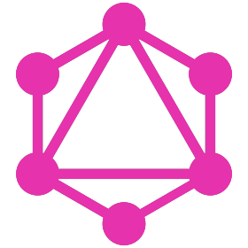

RoJaebl
3년 차, 빠르게 성장하는 주니어 개발자 박헌남 입니다.
Introduction
내세울 수 있는 경력이 없지만 남다른 그릿으로 직장과 학업, 건강을 챙겨가며 개발자의 커리어를 시작하기
위한 매일을 맞이합니다. 직장에서든 학업에서든 하루 일과가
끝나기 전까지 해결해야 하는 문제를 파악하고 쉽고 효율적인
방법으로 체계를 바로잡는 걸 좋아합니다.
프로그래밍뿐만 아니라 기술적, 문서적 자료를 구조화하는 걸
좋아하며, 회사의 기술적 수준을 올리는가 동시에
공유하는 습관으로 부서 구성원 모두가 프로그래밍뿐만 아니라
업무 체계를 팔로우 하는 과정을 경험했습니다.
Introduction
내세울 수 있는 경력이 없지만 남다른 그릿으로 직장과 학업, 건강을 챙겨가며 개발자의 커리어를 시작하기 위한 매일을 맞이합니다. 직장에서든 학업에서든 하루 일과가 끝나기 전까지 해결해야 하는 문제를 파악하고 쉽고 효율적인 방법으로 체계를 바로잡는 걸 좋아합니다.
프로그래밍뿐만 아니라 기술적, 문서적 자료를 구조화하는 걸 좋아하며, 회사의 기술적 수준을 올리는가 동시에 공유하는 습관으로 부서 구성원 모두가 프로그래밍뿐만 아니라 업무 체계를 팔로우 하는 과정을 경험했습니다.
Work Experiences
🛠️ TOSBackHoff 사의 EtherCAT API를 활용하여 auto I/O 검사 소프트웨어 개발
Skill
C# EtherCAT
.NET Framework
2021.04~
2021.08
- EtherCAT 디바이스 하나당 30분 소요하던 검사시간을
5분 내로 단축
- 시작 단계부터 배포 단계까지 1인 개발로 진행
- 개발을 진행하면서 XML, JSON, LINQ 등의 다양한
라이브러리 개발 경험과
- Reflection, Attribute, Task, Collection, Interface,
Class, Generic, GDI+, Property 등의 프로그래밍을
넘어서 C#을 관철하여 메모리를 좀 더 깊게 이해하며,
프론트 백엔드의 설계 및 디자인의 중요성을 자각
🛠️ 정도ADK 5버전을 활용하여 고객 안내 메뉴얼 application
개발
Skill
JAVA
ADK
2020.12
- AVA의 강력한 module 디자인으로 1주일 내로 회사
메뉴얼 application 개발
- Naver developers API 및 Google Cloud API를 활용한 맵
기능 구현
Work Experiences
BackHoff 사의 EtherCAT API를 활용하여 auto I/O 검사 소프트웨어 개발
Skill
C# EtherCAT
.NET Framework
2021.04~
2021.08
- EtherCAT 디바이스 하나당 30분 소요하던 검사시간을 5분 내로 단축
- 시작 단계부터 배포 단계까지 1인 개발로 진행
- 개발을 진행하면서 XML, JSON, LINQ 등의 다양한 라이브러리 개발 경험과
- Reflection, Attribute, Task, Collection, Interface, Class, Generic, GDI+, Property 등의 프로그래밍을 넘어서 C#을 관철하여 메모리를 좀 더 깊게 이해하며, 프론트 백엔드의 설계 및 디자인의 중요성을 자각
ADK 5버전을 활용하여 고객 안내 메뉴얼 application 개발
Skill
JAVA
ADK
2020.12
- AVA의 강력한 module 디자인으로 1주일 내로 회사 메뉴얼 application 개발
- Naver developers API 및 Google Cloud API를 활용한 맵 기능 구현
Toy Project
Uber Eats ClonenestJS 및 확장된 module package로 풀스택 웹 서비스
우버이츠 클론코딩
Skill
nestJS JWT middleware graphQL postgresql
typeORM injection env WSL nodeJS typescript
2022.11~
- nest graphQL 데코레이터를 이용하여 nest로 graphQL
schema 및 resolvers 작성
- nest typeORM 데코레이터를 이용하여 DB에 등록할
entity 작성 및 repository생성.
- nest config dynamic module과 cross-env, joi 패키지를
활용하여 nest를 실행할 때 env로 작성된 파일로 유효성
검사 진행 후 다른 dynamic module에 데이터 제공
- bcrypt로 암호화된 패스워드를 검사 및 확인하여
token을 발행. 이어서 JWT middleware를 구현하고 HTTP
header를 통해 token 유효성 검사하여 로그인하는
authentication 시스템 구현
NestJS API nestJS 프레임워크를 사용하여 웹 API 구현
Skill
nestJS insomnia
jest validator
2022.11
- nestJS 프레임워크의 기본적인 컨샙을 이해하고 각
역할이 나누어진 파일을 하나로 조합하여 앱으로
개발하는 과정을 학습
- Entity, DTO 컨샙으로 module에 사용되는 데이터 형태를
정의하고 API를 설계
- validator 패키지를 활용하여 API로부터 받은 데이터
유효성 검사적용
- nest common 데코레이터의 컨샙과 그 기능을 이해하고
class 및 function에 적용
- 구현한 nest module unit 단위 테스팅과 nest app e2e
단위 테스팅
 GraphQL Movie App 구동한 apollo server에서 API 요청하여 reactJS로 영화 웹
서비스 구현
Skill
graphQL apollo server
reactJS
2022.11
- 이전 구현한 graphQL API server를 react app server에
provider로 제공 후 서버 간의 통신으로 영화 웹 서비스
구현
- JSX component를 직접 구현하여 웹 페이지 디자인
GraphQL API REST API와 같이 웹 서비스를 구현하기 위한 graphQL API
아키텍처 학습
Skill
garphQL apollo server
gql resolver
2022.11
- REST와 graphQL의 차이점을 이해하고 schema,
resolvers를 정의하여 API 구현
- 외부 movie API를 resolver로 fetch 하여 영화 정보
크롤링
VanillaJS 웹 개발을 위한 필수 프로그래밍 언어인 javascript 이론적
학습
Skill javascript
OOP
2022.10
- concrete type, object, array, function, array
function 같은 기본적인 JS 이론학습
- calss, promise, async await 및 JS만의 rest, spread,
destructure를 활용하여 클린 코드 학습
React Native react native를 사용하여 크로스 플폼인 expo를 통해
android app 개발
Skill
react native expo
google store snack
2022.10
- reactJS를 활용하여 iOS와 Adroid 환경에서 크로스
플랫폼 개발이 가능한 지 이론적 학습
- 모바일 환경 없이도 웹으로 native app을 개발할 수
있는 snack 학습
- raect native에서 지원하지 않는 다양한 기능을 React Native Directory이나 expo SDK를 통해서 개발 확장
- to-do list와 날씨 native app 개발
ReactJS Hooks react hook 컨샙을 참고하여 여러 hook 기능을
구현
Skill
javascript react hook
npm codesandbox
2022.10
Redux JS로 구현한 redux와 react로 구현한 redux를 비교하며
데이터 store를 학습
Skill
redux react-redux
redux-toolkit
2022.10
- redux 컨샙을 이해하고 createStore, reducer를
활용하여 to-do list는 구현
- JS redux로 작성된 to-do list를 react redux로
리팩토링
- 리팩토링 과정에서 provider, connect, mapSate,
mapDispatch를 활용하여 store에 등록된 state와
reducer를 react props로 구현
- redux action을 학습하면서 JS의 클로저에 대한 추가 학습으로 프로그래밍 숙련도 향상
 Scss Master Class
Scss Master Class 학습하였던 gulp와 git을 활용하여 여러 HTML/CSS 과제
진행
Skill
sass scss pug
nodeJS gulp javascript
2022.10
- Front-end에 익숙해지기 위해 2주 동안 진행되는
풀이 과제 진행
- scss를 활용하여 순수 css 만으로 랜딩 페이지 구현
ReacJS Movie App create-react-app을 생성하여 가상화 시세, to-do list,
movie web page 제작
Skill
reactJS
javascript
2022.09
- react hook(useState, useEffect)를 이해하고 활용하여
페이지 렌더링 학습
- JSX를 이해하고 components를 직접 디자인하고 구현
- props와 prop-types를 이해하고 css file를 import 하여
components를 구현
 Typescript Hash Chain
Typescript Hash Chain typescript 이론을 공부하면서 SHA256으로 블록체인의
기본적인 원리를 학습
Skill
typescript
OOP
2022.07
- 컴파일러 언어들이 가지고 있는 강력한 type 및 class,
externs, interface, generic, overloading,
polymorphism 등의 기능을 학습
- typescript playground에서 빠르게 소스코드를 실행할 수 있는 방법을 학습
- nodeJS와 gulp를 활용하여 TS를 JS로 컴파일하고 빌드
- JS에서도 TS lint를 사용할 수 있는 JSDoc 학습
- JS로 정의된 코드를 .d.ts 작성 및 선언하여 JS 코드를
TS에서 사용하는 방법을 학습
Git and Github 현업 및 개인 프로젝트 관리를 위한 git 및 github 시스템
학습
Skill
git WSL
github repository
2022.06
- git의 전체적인 시스템과 각 cli 별로 동작하는 프로세스
학습
- github cli와 github GUI를 비롯한 pull requests 및
fork로 진행되는 워크플로 학습
- head와 hash 이해와 index, worktree, repository 간의
git 프로세스 학습

VanillaJS Web App HTML과 CSS에 JS를 더하여 브라우저 앱을 개발하는 방법을
학습
Skill
HTML CSS
javascript
2022.02~
2022.03
- JS ducument를 통해 브라우저 elements와 대화하는
방법을 학습
- Fetch를 사용하여 날씨 API 정보를 활용하는 방법을
학습
- Stream으로 local file를 입출력하는 방법을 학습
- ToDo list를 localStorage API로 구현하여 데이터를
CRUD 하는 방법을 학습
Linux for Windows (WSL) 윈도우에서 리눅스 커널을 사용하여 보다 빠른 개발환경을
구축
Skill
WLS ubuntu npm
zsh curl
2022.02
- 윈도우 터미널 앱을 활용하여 리눅스 커널 환경 설정 방법 학습
- 커널을 커스터마이징 할 수 있는 zsh 설치 및 zsh
프레임워크로 보다 사용자 친화적인 환경 설정 방법 학습
Kakao Talk Clone HTML과 CSS 파일만을 사용하여 카카오톡 디자인을
브라우저로 개발
Skill
HTML
CSS
2021.12~
2022.01
- HTML의 기본 tag 및 components, attribute 등을 직접
사용하고 custom elemten 구현
- CSS의 id, class, variable의 기본 사용법으로 HTML과
소통하는 방법을 익히며, 선택자 및 의사 클래스,
미디어를 활용하여 좀 더 세밀하고 다양한 디자인을
구현하는 방법을 학습
Toy Project
nestJS 및 확장된 module package로 풀스택 웹 서비스 우버이츠 클론코딩
Skill
nestJS JWT middleware graphQL postgresql
typeORM injection env WSL nodeJS typescript
2022.11~
- nest graphQL 데코레이터를 이용하여 nest로 graphQL schema 및 resolvers 작성
- nest typeORM 데코레이터를 이용하여 DB에 등록할 entity 작성 및 repository생성.
- nest config dynamic module과 cross-env, joi 패키지를 활용하여 nest를 실행할 때 env로 작성된 파일로 유효성 검사 진행 후 다른 dynamic module에 데이터 제공
- bcrypt로 암호화된 패스워드를 검사 및 확인하여 token을 발행. 이어서 JWT middleware를 구현하고 HTTP header를 통해 token 유효성 검사하여 로그인하는 authentication 시스템 구현
nestJS 프레임워크를 사용하여 웹 API 구현
Skill
nestJS insomnia
jest validator
2022.11
- nestJS 프레임워크의 기본적인 컨샙을 이해하고 각 역할이 나누어진 파일을 하나로 조합하여 앱으로 개발하는 과정을 학습
- Entity, DTO 컨샙으로 module에 사용되는 데이터 형태를 정의하고 API를 설계
- validator 패키지를 활용하여 API로부터 받은 데이터 유효성 검사적용
- nest common 데코레이터의 컨샙과 그 기능을 이해하고 class 및 function에 적용
- 구현한 nest module unit 단위 테스팅과 nest app e2e 단위 테스팅
구동한 apollo server에서 API 요청하여 reactJS로 영화 웹 서비스 구현
Skill
graphQL apollo server
reactJS
2022.11
- 이전 구현한 graphQL API server를 react app server에 provider로 제공 후 서버 간의 통신으로 영화 웹 서비스 구현
- JSX component를 직접 구현하여 웹 페이지 디자인
REST API와 같이 웹 서비스를 구현하기 위한 graphQL API 아키텍처 학습
Skill
garphQL apollo server
gql resolver
2022.11
- REST와 graphQL의 차이점을 이해하고 schema, resolvers를 정의하여 API 구현
- 외부 movie API를 resolver로 fetch 하여 영화 정보 크롤링
웹 개발을 위한 필수 프로그래밍 언어인 javascript 이론적 학습
Skill
javascript
OOP
2022.10
- concrete type, object, array, function, array function 같은 기본적인 JS 이론학습
- calss, promise, async await 및 JS만의 rest, spread, destructure를 활용하여 클린 코드 학습
react native를 사용하여 크로스 플폼인 expo를 통해 android app 개발
Skill
react native expo
google store snack
2022.10
- reactJS를 활용하여 iOS와 Adroid 환경에서 크로스 플랫폼 개발이 가능한 지 이론적 학습
- 모바일 환경 없이도 웹으로 native app을 개발할 수 있는 snack 학습
- raect native에서 지원하지 않는 다양한 기능을 React Native Directory이나 expo SDK를 통해서 개발 확장
- to-do list와 날씨 native app 개발
react hook 컨샙을 참고하여 여러 hook 기능을 구현
Skill
javascript react hook
npm codesandbox
2022.10
JS로 구현한 redux와 react로 구현한 redux를 비교하며 데이터 store를 학습
Skill
redux react-redux
redux-toolkit
2022.10
- redux 컨샙을 이해하고 createStore, reducer를 활용하여 to-do list는 구현
- JS redux로 작성된 to-do list를 react redux로 리팩토링
- 리팩토링 과정에서 provider, connect, mapSate, mapDispatch를 활용하여 store에 등록된 state와 reducer를 react props로 구현
- redux action을 학습하면서 JS의 클로저에 대한 추가 학습으로 프로그래밍 숙련도 향상
학습하였던 gulp와 git을 활용하여 여러 HTML/CSS 과제 진행
Skill
sass scss pug
nodeJS gulp javascript
2022.10
- Front-end에 익숙해지기 위해 2주 동안 진행되는 풀이 과제 진행
- scss를 활용하여 순수 css 만으로 랜딩 페이지 구현
create-react-app을 생성하여 가상화 시세, to-do list, movie web page 제작
Skill
reactJS
javascript
2022.09
- react hook(useState, useEffect)를 이해하고 활용하여 페이지 렌더링 학습
- JSX를 이해하고 components를 직접 디자인하고 구현
- props와 prop-types를 이해하고 css file를 import 하여 components를 구현
typescript 이론을 공부하면서 SHA256으로 블록체인의 기본적인 원리를 학습
Skill
typescript
OOP
2022.07
- 컴파일러 언어들이 가지고 있는 강력한 type 및 class, externs, interface, generic, overloading, polymorphism 등의 기능을 학습
- typescript playground에서 빠르게 소스코드를 실행할 수 있는 방법을 학습
- nodeJS와 gulp를 활용하여 TS를 JS로 컴파일하고 빌드
- JS에서도 TS lint를 사용할 수 있는 JSDoc 학습
- JS로 정의된 코드를 .d.ts 작성 및 선언하여 JS 코드를 TS에서 사용하는 방법을 학습
현업 및 개인 프로젝트 관리를 위한 git 및 github 시스템 학습
Skill
git WSL
github repository
2022.06
- git의 전체적인 시스템과 각 cli 별로 동작하는 프로세스 학습
- github cli와 github GUI를 비롯한 pull requests 및 fork로 진행되는 워크플로 학습
- head와 hash 이해와 index, worktree, repository 간의 git 프로세스 학습
HTML과 CSS에 JS를 더하여 브라우저 앱을 개발하는 방법을 학습
Skill
HTML CSS
javascript
2022.02~
2022.03
- JS ducument를 통해 브라우저 elements와 대화하는 방법을 학습
- Fetch를 사용하여 날씨 API 정보를 활용하는 방법을 학습
- Stream으로 local file를 입출력하는 방법을 학습
- ToDo list를 localStorage API로 구현하여 데이터를 CRUD 하는 방법을 학습
윈도우에서 리눅스 커널을 사용하여 보다 빠른 개발환경을 구축
Skill
WLS ubuntu npm
zsh curl
2022.02
- 윈도우 터미널 앱을 활용하여 리눅스 커널 환경 설정 방법 학습
- 커널을 커스터마이징 할 수 있는 zsh 설치 및 zsh 프레임워크로 보다 사용자 친화적인 환경 설정 방법 학습
HTML과 CSS 파일만을 사용하여 카카오톡 디자인을 브라우저로 개발
Skill
HTML
CSS
2021.12~
2022.01
- HTML의 기본 tag 및 components, attribute 등을 직접 사용하고 custom elemten 구현
- CSS의 id, class, variable의 기본 사용법으로 HTML과 소통하는 방법을 익히며, 선택자 및 의사 클래스, 미디어를 활용하여 좀 더 세밀하고 다양한 디자인을 구현하는 방법을 학습
Skill
🏗️ Framework react nest
💡 Etc nodeJS rest postgresql ADK linux wsl
🔠 Language Javascript Typescript C# IEC 61131-3 c c++
📚 strong Library document Date joi gulp cross-env react react native jsonwebtoken typeorm jest expo graphql redux
Skill
react nest
nodeJS rest postgresql ADK linux wsl
Javascript Typescript C# IEC 61131-3 c c++
document Date joi gulp cross-env react react native jsonwebtoken typeorm jest expo graphql redux
Study
Study
 https://thirsty-tricorne-cbb.notion.site/Code-7847968e45af4397b8687002b76b18bf
https://thirsty-tricorne-cbb.notion.site/Code-7847968e45af4397b8687002b76b18bf
Self Interview
 Q. 회사 프로젝트를 혼자 진행한 건가요?
Q. 회사 프로젝트를 혼자 진행한 건가요?
A. 모든 프로젝트를 혼자 진행하였습니다. 제가 일하는
환경은 IT와 거리가 있는 전기 시스템과 OT(Operational
Technology) 분야이기에 소프트웨어 개발자를 운영하지
않았습니다. 그렇기에 평소 IT 개발에 관심이 많아 먼저
나서서 개발에 착수하였고, 개발자 고용이 부담스러운 회사
입장에서 기존 인력으로 프로그램을 개발하였습니다.
Q. 토이 프로젝트를 보면 웹 개발이 전부인데 C#을 따로 학습한 적이 있었나요?
A. EtherCAT 개발을 진행함과 동시에 학습하였습니다. C, C++, JAVA 지식을
작게나마 가지고 있었지만, 소프트웨어 개발은 처음이기에
막막하였습니다. 하지만 제 가치를 증명하기 위한 기회라
생각하여 C#, .NET, MS 공식 라이브러리 레퍼런스를
참조하여 학습하였고, 모범 사례나 기술적 문서가 없는
EtherCAT API를 직접 테스팅 하며 개발해 나갔습니다. 그리고
약 7개월 동안 소프트웨어 3개를 개발하게
되었습니다.
Q. 그럼 App 개발도 따로 학습한 적이 없는 건가요?
A. JAVA도 App 개발을 진행함과 동시에 학습하였습니다.
이때에는 ADK 플랫폼이 무엇이진 모른 상태에서 인터넷을
검색하고 필요한 정보와 기술문서들을 분석해가며 개발
하였습니다.
Q. 사수도 없이 개발을 진행한 건가요?
A. 저에게는 어드바이스 해줄 사수나 선배가 없습니다.
또한 고등학교 친구들도 OT, IT로 종사한 사람이 없기에
혼자서 모든 상황을 해결해야 했습니다. 그렇기에 구현할
기능을 검색하여 코딩하고 이러한 구성으로 왜 동작하는지
그 기술적 백그라운드를 스스로 생각하고 코드를 역으로
학습하며 재구현하는 방식으로 아키텍처를 파악하여 개발을
진행해 왔습니다.
Q. 웹 개발을 학습하기 이전에는 어떠한 일을 했나요?
A. OT 분야로 전기 판넬을 제작하고 PLC로 산업 장비를 셋업
시운전하여 최종적으로 납품하는 일을 해왔습니다. 산업
표준 언어인 IEC 61131-3 언어로 LD와 ST를 사용하며, 현재
git과 github를 활용하여 현업 하기 어려운 환경인 OT만의
전용 아키텍처 및 디자인을 설계하고 있습니다.
 Q. 어떻게 웹 개발 공부와 업무를 병행해가며 진행했나요?
Q. 어떻게 웹 개발 공부와 업무를 병행해가며 진행했나요?
A. 웹 개발로 업을 정한 이후로 회사에서는 OT와
소프트웨어에 집중하고, 퇴근 이후에는 운동과 학업에
매진했습니다. 경제활동 없이 학업에 열중할 수 있는 환경이
아니었기에 학업에 방해되는 모든 루틴을 제거하고, 학업에
열중할 수 있는 체력을 기르기 위해 운동을 병행해가며
진행했습니다.
Q. 회사 프로젝트를 진행하면서 학업을 진행하기에 어려움은 없었나요?
A. 어려웠던 순간들은 만히 있었습니다. 사수가 없어
답답했던 경험, 학습 방향이 맞는지에 대한 의심,
소비자에게 가치 있는 프로덕트를 제공할 수 있는가에 대한
두려움 등 종종 떠오르곤 했습니다. 하지만 개발자로 이루고
싶은 목표가 확고하기에 처한 환경을 탓하지 않고 해결할 수
있는 방법을 찾아서 나아갔습니다. 또한 어드바이스 받을
사람이 없었기에 더디지만 배움을 깊게 고민하고
여러 방면으로 생각하여 학습하였습니다. 이러한 습관으로
잠재된 학습과 아이디어로 어려운 문제에 봉착하여도 해결해
나갔습니다.
Q. 많은 기술을 학습한게 아닌가요?
A. 개인적으로도 충분히 인지하고 있기에 모든 걸 활용할 수
있다고 확신하지 않습니다. 그렇기에 Uber eats 클론 코딩으로 학습한 내용을 종합적으로 활용하고 여러
엔터프라이즈급 개인 프로젝트를 중심으로 개발하고
서비스하여 부제 된 경험을 채워나갈 겁니다.
Self Interview
A. 모든 프로젝트를 혼자 진행하였습니다. 제가 일하는 환경은 IT와 거리가 있는 전기 시스템과 OT(Operational Technology) 분야이기에 소프트웨어 개발자를 운영하지 않았습니다. 그렇기에 평소 IT 개발에 관심이 많아 먼저 나서서 개발에 착수하였고, 개발자 고용이 부담스러운 회사 입장에서 기존 인력으로 프로그램을 개발하였습니다.
A. EtherCAT 개발을 진행함과 동시에 학습하였습니다. C, C++, JAVA 지식을 작게나마 가지고 있었지만, 소프트웨어 개발은 처음이기에 막막하였습니다. 하지만 제 가치를 증명하기 위한 기회라 생각하여 C#, .NET, MS 공식 라이브러리 레퍼런스를 참조하여 학습하였고, 모범 사례나 기술적 문서가 없는 EtherCAT API를 직접 테스팅 하며 개발해 나갔습니다. 그리고 약 7개월 동안 소프트웨어 3개를 개발하게 되었습니다.
A. JAVA도 App 개발을 진행함과 동시에 학습하였습니다. 이때에는 ADK 플랫폼이 무엇이진 모른 상태에서 인터넷을 검색하고 필요한 정보와 기술문서들을 분석해가며 개발 하였습니다.
A. 저에게는 어드바이스 해줄 사수나 선배가 없습니다. 또한 고등학교 친구들도 OT, IT로 종사한 사람이 없기에 혼자서 모든 상황을 해결해야 했습니다. 그렇기에 구현할 기능을 검색하여 코딩하고 이러한 구성으로 왜 동작하는지 그 기술적 백그라운드를 스스로 생각하고 코드를 역으로 학습하며 재구현하는 방식으로 아키텍처를 파악하여 개발을 진행해 왔습니다.
A. OT 분야로 전기 판넬을 제작하고 PLC로 산업 장비를 셋업 시운전하여 최종적으로 납품하는 일을 해왔습니다. 산업 표준 언어인 IEC 61131-3 언어로 LD와 ST를 사용하며, 현재 git과 github를 활용하여 현업 하기 어려운 환경인 OT만의 전용 아키텍처 및 디자인을 설계하고 있습니다.
A. 웹 개발로 업을 정한 이후로 회사에서는 OT와 소프트웨어에 집중하고, 퇴근 이후에는 운동과 학업에 매진했습니다. 경제활동 없이 학업에 열중할 수 있는 환경이 아니었기에 학업에 방해되는 모든 루틴을 제거하고, 학업에 열중할 수 있는 체력을 기르기 위해 운동을 병행해가며 진행했습니다.
A. 어려웠던 순간들은 만히 있었습니다. 사수가 없어 답답했던 경험, 학습 방향이 맞는지에 대한 의심, 소비자에게 가치 있는 프로덕트를 제공할 수 있는가에 대한 두려움 등 종종 떠오르곤 했습니다. 하지만 개발자로 이루고 싶은 목표가 확고하기에 처한 환경을 탓하지 않고 해결할 수 있는 방법을 찾아서 나아갔습니다. 또한 어드바이스 받을 사람이 없었기에 더디지만 배움을 깊게 고민하고 여러 방면으로 생각하여 학습하였습니다. 이러한 습관으로 잠재된 학습과 아이디어로 어려운 문제에 봉착하여도 해결해 나갔습니다.
A. 개인적으로도 충분히 인지하고 있기에 모든 걸 활용할 수 있다고 확신하지 않습니다. 그렇기에 Uber eats 클론 코딩으로 학습한 내용을 종합적으로 활용하고 여러 엔터프라이즈급 개인 프로젝트를 중심으로 개발하고 서비스하여 부제 된 경험을 채워나갈 겁니다.
@RoJaebl